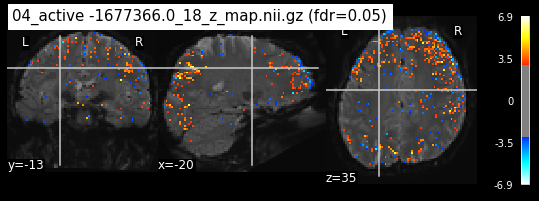
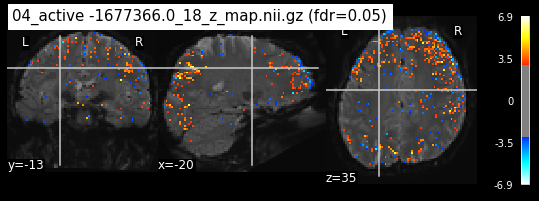

General linear model#
0. Introduction#
This notebook holds the code for the general linear model.
First we will need to load the data. We are now dealing with the preprocessed data. The preprocessing has been done with using fMRI-prep. fMRIprep describes itself as such “(…)It performs basic processing steps (coregistration, normalization, unwarping, noise component extraction, segmentation, skullstripping etc.) providing outputs that can be easily submitted to a variety of group level analyses, including task-based or resting-state fMRI, graph theory measures, surface or volume-based statistics, etc.”
Thus, we will now perform our first level model. The predictors are the respective categories of the stimuli. The dependent variable is the brain activity in a given voxel. So lets start by loading the data! For now we are dealing with the first five runs of subject one, for the first session in the imagery task.
import os
os.chdir('/mnt/c/Users/janos/git/sub01-ses-01-imagery')
We can now take a look at all the files we have. In total, we have five runs. For each run, we have .json file, a nii.gz file and a confounds.tsv file. In the Dataset_Exploration notebook we had a similar structure. But instead of the events.tsv file, we now have the confounds file. The confound file contain the regressors of no interest. Those are variables, that we should explicitly exclude from our first level model and are computed during the preprocessing. We also see that we have preprocessed data, because the respective file names carry the additional “preproc”.
ls
sub-01_ses-imagery01_task-imagery_run-01_desc-preproc_bold.json*
sub-01_ses-imagery01_task-imagery_run-01_desc-preproc_bold.nii.gz*
sub-01_ses-imagery01_task-imagery_run-01_desc-preproc_confounds.tsv*
sub-01_ses-imagery01_task-imagery_run-02_desc-preproc_bold.json*
sub-01_ses-imagery01_task-imagery_run-02_desc-preproc_bold.nii.gz*
sub-01_ses-imagery01_task-imagery_run-02_desc-preproc_confounds.tsv*
sub-01_ses-imagery01_task-imagery_run-03_desc-preproc_bold.json*
sub-01_ses-imagery01_task-imagery_run-03_desc-preproc_bold.nii.gz*
sub-01_ses-imagery01_task-imagery_run-03_desc-preproc_confounds.tsv*
sub-01_ses-imagery01_task-imagery_run-04_desc-preproc_bold.json*
sub-01_ses-imagery01_task-imagery_run-04_desc-preproc_bold.nii.gz*
sub-01_ses-imagery01_task-imagery_run-04_desc-preproc_confounds.tsv*
sub-01_ses-imagery01_task-imagery_run-05_desc-preproc_bold.json*
sub-01_ses-imagery01_task-imagery_run-05_desc-preproc_bold.nii.gz*
sub-01_ses-imagery01_task-imagery_run-05_desc-preproc_confounds.tsv*
z_maps/
We can now load one sample confounds.tsv file, to see what regressors of no interest are
import pandas as pd
confounds=pd.read_csv('sub-01_ses-imagery01_task-imagery_run-01_desc-preproc_confounds.tsv',sep='\t')
confounds
| global_signal | global_signal_derivative1 | global_signal_derivative1_power2 | global_signal_power2 | csf | csf_derivative1 | csf_power2 | csf_derivative1_power2 | white_matter | white_matter_derivative1 | ... | rot_z_derivative1 | rot_z_power2 | rot_z_derivative1_power2 | motion_outlier00 | motion_outlier01 | motion_outlier02 | motion_outlier03 | motion_outlier04 | motion_outlier05 | motion_outlier06 | |
|---|---|---|---|---|---|---|---|---|---|---|---|---|---|---|---|---|---|---|---|---|---|
| 0 | 554.498550 | NaN | NaN | 307468.641921 | 826.870090 | NaN | 683714.146374 | NaN | 551.701398 | NaN | ... | NaN | 0.000031 | NaN | 0.0 | 0.0 | 0.0 | 0.0 | 0.0 | 0.0 | 0.0 |
| 1 | 552.545617 | -1.952933 | 3.813947 | 305306.659011 | 815.862929 | -11.007161 | 665632.319586 | 121.157593 | 551.526335 | -0.175063 | ... | -0.000709 | 0.000040 | 5.032484e-07 | 1.0 | 0.0 | 0.0 | 0.0 | 0.0 | 0.0 | 0.0 |
| 2 | 550.823228 | -1.722389 | 2.966623 | 303406.228820 | 810.248197 | -5.614732 | 656502.140689 | 31.525220 | 551.675734 | 0.149399 | ... | -0.000045 | 0.000040 | 2.061160e-09 | 0.0 | 0.0 | 0.0 | 0.0 | 0.0 | 0.0 | 0.0 |
| 3 | 548.659178 | -2.164050 | 4.683113 | 301026.893801 | 807.405975 | -2.842222 | 651904.408184 | 8.078227 | 551.932003 | 0.256269 | ... | 0.000220 | 0.000038 | 4.852768e-08 | 0.0 | 0.0 | 0.0 | 0.0 | 0.0 | 0.0 | 0.0 |
| 4 | 547.315987 | -1.343191 | 1.804162 | 299554.789688 | 806.497248 | -0.908726 | 650437.811788 | 0.825784 | 550.669163 | -1.262840 | ... | 0.000058 | 0.000037 | 3.414065e-09 | 0.0 | 0.0 | 0.0 | 0.0 | 0.0 | 0.0 | 0.0 |
| ... | ... | ... | ... | ... | ... | ... | ... | ... | ... | ... | ... | ... | ... | ... | ... | ... | ... | ... | ... | ... | ... |
| 222 | 554.966041 | -1.277939 | 1.633127 | 307987.307133 | 813.088753 | -6.370867 | 661113.320100 | 40.587943 | 552.662723 | -0.652898 | ... | 0.000004 | 0.000019 | 1.436410e-11 | 0.0 | 0.0 | 0.0 | 0.0 | 0.0 | 0.0 | 0.0 |
| 223 | 554.111798 | -0.854243 | 0.729731 | 307039.885019 | 810.995302 | -2.093451 | 657713.379057 | 4.382539 | 552.448883 | -0.213841 | ... | 0.000335 | 0.000016 | 1.119772e-07 | 0.0 | 0.0 | 0.0 | 0.0 | 0.0 | 0.0 | 0.0 |
| 224 | 553.453749 | -0.658049 | 0.433028 | 306311.052626 | 815.053154 | 4.057853 | 664311.643996 | 16.466168 | 552.643977 | 0.195094 | ... | -0.000573 | 0.000021 | 3.285238e-07 | 0.0 | 0.0 | 0.0 | 0.0 | 0.0 | 0.0 | 0.0 |
| 225 | 551.820319 | -1.633431 | 2.668096 | 304505.664025 | 808.053376 | -6.999778 | 652950.258208 | 48.996896 | 552.455372 | -0.188605 | ... | -0.000682 | 0.000028 | 4.651786e-07 | 0.0 | 0.0 | 0.0 | 0.0 | 0.0 | 0.0 | 0.0 |
| 226 | 553.363106 | 1.542787 | 2.380193 | 306210.727138 | 809.010798 | 0.957423 | 654498.471869 | 0.916658 | 552.985391 | 0.530019 | ... | -0.000365 | 0.000032 | 1.334295e-07 | 0.0 | 0.0 | 0.0 | 0.0 | 0.0 | 0.0 | 0.0 |
227 rows × 243 columns
We can extract the respective columns from our confounds dataframe and create a new one, that only containts the regressors of no interest
reg_no_interest = confounds[['global_signal', 'trans_x','trans_z','trans_y','rot_x','rot_y','rot_z']].copy()
reg_no_interest
| global_signal | trans_x | trans_z | trans_y | rot_x | rot_y | rot_z | |
|---|---|---|---|---|---|---|---|
| 0 | 554.498550 | 0.152997 | 0.059195 | 0.124130 | -0.004563 | 0.007716 | -0.005596 |
| 1 | 552.545617 | 0.174779 | 0.158409 | 0.017678 | -0.003366 | 0.007310 | -0.006305 |
| 2 | 550.823228 | 0.171488 | 0.189918 | 0.002432 | -0.002752 | 0.007173 | -0.006351 |
| 3 | 548.659178 | 0.168912 | 0.155673 | 0.054476 | -0.003509 | 0.007052 | -0.006131 |
| 4 | 547.315987 | 0.171913 | 0.199063 | 0.030412 | -0.003196 | 0.007388 | -0.006072 |
| ... | ... | ... | ... | ... | ... | ... | ... |
| 222 | 554.966041 | -0.271419 | 0.030273 | -0.364504 | 0.006790 | -0.017684 | -0.004396 |
| 223 | 554.111798 | -0.240987 | -0.066789 | -0.252943 | 0.005830 | -0.016664 | -0.004061 |
| 224 | 553.453749 | -0.195186 | -0.108477 | -0.237718 | 0.005214 | -0.015303 | -0.004634 |
| 225 | 551.820319 | -0.225104 | -0.083225 | -0.247957 | 0.004335 | -0.015039 | -0.005316 |
| 226 | 553.363106 | -0.237460 | -0.057182 | -0.257723 | 0.004266 | -0.015373 | -0.005682 |
227 rows × 7 columns
This looks good! Now that we took care of the confounds, its time to import nilearns FirstLevelModel function.
This function creates a design matrix and uses the information provided by the events file.
The function requires a lot of different parameters to be set.
from nilearn.glm.first_level import FirstLevelModel
/home/jpauli/miniconda3/envs/neuro_ai/lib/python3.7/site-packages/nilearn/glm/__init__.py:56: FutureWarning: The nilearn.glm module is experimental. It may change in any future release of Nilearn.
'It may change in any future release of Nilearn.', FutureWarning)
For the sake of the course purpose, we will stick to the default settings. Only t_r (= the time of repetition of acquisitions) and the hrf_model (hemodynamic response model) need to be adapted.
import json
with open('sub-01_ses-imagery01_task-imagery_run-01_desc-preproc_bold.json') as json_file:
meta_file = json.load(json_file)
meta_file
{'DelayTime': 0.09749999999999992,
'RepetitionTime': 2.0,
'SkullStripped': False,
'SliceTimingCorrected': True,
'StartTime': 0.951,
'TaskName': 'imagery'}
The t_r is 2.0 seconds. Now that we have this parameter we are almost good to go. For the first level model the hrf model is set to SPM, so we also have this information.
fmri_glm = FirstLevelModel(t_r = 2.0, hrf_model = 'spm',
slice_time_ref=0.0,
drift_model='cosine',
high_pass=.01,
noise_model='ar1',
minimize_memory = False)
As mentioned before, we need the events.tsv file for the FirstLevelModel and thus the design matrix. Lets load this file so we can continue.
events=pd.read_csv('/home/jpauli/ds001506/sub-01/ses-imagery01/func/sub-01_ses-imagery01_task-imagery_run-01_events.tsv',sep='\t')
events
| onset | duration | trial_no | event_type | category_id | category_name | category_index | response_time | evaluation | |
|---|---|---|---|---|---|---|---|---|---|
| 0 | 0.0 | 32.0 | 1.0 | -1 | NaN | NaN | NaN | NaN | NaN |
| 1 | 32.0 | 4.0 | 2.0 | 1 | 1976957.0 | n01976957 | 7.0 | 44.967050 | 4.0 |
| 2 | 36.0 | 8.0 | 2.0 | 2 | 1976957.0 | n01976957 | 7.0 | 44.967050 | 4.0 |
| 3 | 44.0 | 3.0 | 2.0 | 3 | 1976957.0 | n01976957 | 7.0 | 44.967050 | 4.0 |
| 4 | 47.0 | 1.0 | 2.0 | 4 | 1976957.0 | n01976957 | 7.0 | 44.967050 | 4.0 |
| ... | ... | ... | ... | ... | ... | ... | ... | ... | ... |
| 101 | 432.0 | 4.0 | 27.0 | 1 | 1943899.0 | n01943899 | 6.0 | 445.498226 | 2.0 |
| 102 | 436.0 | 8.0 | 27.0 | 2 | 1943899.0 | n01943899 | 6.0 | 445.498226 | 2.0 |
| 103 | 444.0 | 3.0 | 27.0 | 3 | 1943899.0 | n01943899 | 6.0 | 445.498226 | 2.0 |
| 104 | 447.0 | 1.0 | 27.0 | 4 | 1943899.0 | n01943899 | 6.0 | 445.498226 | 2.0 |
| 105 | 448.0 | 6.0 | 28.0 | -2 | NaN | NaN | NaN | NaN | NaN |
106 rows × 9 columns
From this file, we need the to save the onset, duration and the trial_type. However, we do not have the trial_type column yet. This column should tell us which respective trial we are dealing with at a given timestap. This is already given in the event_type column, but we need to translate the integers to an actual informative string. Also, we cannot simply assign every imagery trial the same value. We want to differantiate between the different stimuli. So before extracting the onset and duration column, we will first create the trial_type column and then proceed. This column indicates, when rest, cue presentation, imagery evaluation or inter-trial and post rest periods happened. Also it informs us, which exact stimuli was imagined.
trial_type = ['ABC']*len(events['event_type'])
category = events['category_id']
for idx, x in enumerate(events['event_type']):
if x == -1:
trial_type[idx] = 'Rest'
if x == 1:
trial_type[idx] = 'Cue presentation'
if x == 2:
trial_type[idx] = 'imagery' + str(category[idx])
if x == 3:
trial_type[idx] = 'Imagery evaluation'
if x == 4 or x == -2:
trial_type[idx] = 'inter-trial and post rest period'
event_sub_ses_run_01 = events[['onset','duration']]
event_sub_ses_run_01['trial_type'] = trial_type
event_sub_ses_run_01
/home/jpauli/miniconda3/envs/neuro_ai/lib/python3.7/site-packages/ipykernel_launcher.py:2: SettingWithCopyWarning:
A value is trying to be set on a copy of a slice from a DataFrame.
Try using .loc[row_indexer,col_indexer] = value instead
See the caveats in the documentation: https://pandas.pydata.org/pandas-docs/stable/user_guide/indexing.html#returning-a-view-versus-a-copy
| onset | duration | trial_type | |
|---|---|---|---|
| 0 | 0.0 | 32.0 | Rest |
| 1 | 32.0 | 4.0 | Cue presentation |
| 2 | 36.0 | 8.0 | imagery1976957.0 |
| 3 | 44.0 | 3.0 | Imagery evaluation |
| 4 | 47.0 | 1.0 | inter-trial and post rest period |
| ... | ... | ... | ... |
| 101 | 432.0 | 4.0 | Cue presentation |
| 102 | 436.0 | 8.0 | imagery1943899.0 |
| 103 | 444.0 | 3.0 | Imagery evaluation |
| 104 | 447.0 | 1.0 | inter-trial and post rest period |
| 105 | 448.0 | 6.0 | inter-trial and post rest period |
106 rows × 3 columns
The last thing we need is the fMRI img. We get this by loading the functional image and then applying nilearns mean_img function to it.
path_func_img = '/mnt/c/Users/janos/git/sessions_new/sub01-ses-01-imagery'
fmri_img = os.path.join(path_func_img ,'sub-01_ses-imagery01_task-imagery_run-01_desc-preproc_bold.nii.gz')
from nilearn.image import mean_img
from nilearn.plotting import plot_stat_map, plot_anat, plot_img, show, plot_glass_brain
mean_img_ = mean_img(fmri_img)
plot_img(mean_img_)
<nilearn.plotting.displays._slicers.OrthoSlicer at 0x7f02b0e9b908>
1.0 Running the model#
Now it is time to run our defined first level model. We are using our mean fMRI img and our event and confound file. This results in a design matrix. The design matrix is informing us about a given activity for the respective regressor and for a given scan number. We have a recording frequency of 2 seconds. The whole paradigm took about 400 seconds (see: Dataset_Exploration.ipynb). This is why the only have 200 scan numbers on our y-axis.
fmri_glm = fmri_glm.fit(fmri_img, event_sub_ses_run_01, reg_no_interest)
import matplotlib.pyplot as plt
%matplotlib inline
design_matrix = fmri_glm.design_matrices_[0]
from nilearn.plotting import plot_design_matrix
plot_design_matrix(design_matrix)
<AxesSubplot:label='conditions', ylabel='scan number'>
We can also plot the expected response for a given category. This tells us at which time there was a BOLD response for the respective category.
plt.plot(design_matrix['imagery14435370'])
plt.xlabel('time')
plt.title('Expected Response for category 14435370')
Text(0.5, 1.0, 'Expected Response for category 14435370')
2.0 Detection of significant voxels#
In order to estimate our Betas of the GLM, we need to calculate the contrasts for all conditions. By doing this, we are weighting the columns to discover the associated statistics.
This requires some data wrangling. First, we need to extract all unique values from our event file, so we only have the stimuli presented in the paradigm. Before, we have to sort the values, because our design matrix follows a ascending order. Then we remove the one NaN from this list. After that, we will create the variable conditions. This list containts the prefix “active”, so we know we are dealing with an activated brain region and is added by the respective condition name.
Then an array of the length of all regressors is created. For each of our regressors of interest, so for all our conditions, i.e. imagery stimuli, a weight is assigned. One thing is very important here: Our design matrix tells us, that the first three regressors are NOT the imagery conditions but rather the cue presentation, rest and imagery evaluation. Due to this, we have to start by assigning the first weight to the fourth zero of our array. This is then combined into a dictionary, so it can serve as in input to the nilearn function plot_contrast_matrix.
import math
events.sort_values(by=['category_id'], inplace=True,ascending=True)
con = events.category_id.unique().tolist()
con_no_NaN = [item for item in con if not(math.isnan(item)) == True]
conditions = ['spaceholder']*len(con_no_NaN)
for pos, x in enumerate(con_no_NaN):
conditions[pos] = 'active -' + str(x)
from numpy import array
array_a = array([0]*design_matrix.shape[1])
array_a[3] = 1
arr = []
i = 4
k=1
while i < len(conditions)+4:
arr.append(array_a)
if len(arr) >= k:
array_a = array([0]*design_matrix.shape[1])
array_a[i] = 1
i = i+1
k=k+1
else:
array_a = array([0]*design_matrix.shape[1])
i=i+1
continue
condition = dict.fromkeys(conditions)
i=0
for k,x in condition.items():
condition[k] = arr[i]
i=i+1
condition
{'active -1443537.0': array([0, 0, 0, 1, 0, 0, 0, 0, 0, 0, 0, 0, 0, 0, 0, 0, 0, 0, 0, 0, 0, 0,
0, 0, 0, 0, 0, 0, 0, 0, 0, 0, 0, 0, 0, 0, 0, 0, 0, 0, 0, 0, 0, 0,
0, 0, 0]),
'active -1621127.0': array([0, 0, 0, 0, 1, 0, 0, 0, 0, 0, 0, 0, 0, 0, 0, 0, 0, 0, 0, 0, 0, 0,
0, 0, 0, 0, 0, 0, 0, 0, 0, 0, 0, 0, 0, 0, 0, 0, 0, 0, 0, 0, 0, 0,
0, 0, 0]),
'active -1677366.0': array([0, 0, 0, 0, 0, 1, 0, 0, 0, 0, 0, 0, 0, 0, 0, 0, 0, 0, 0, 0, 0, 0,
0, 0, 0, 0, 0, 0, 0, 0, 0, 0, 0, 0, 0, 0, 0, 0, 0, 0, 0, 0, 0, 0,
0, 0, 0]),
'active -1846331.0': array([0, 0, 0, 0, 0, 0, 1, 0, 0, 0, 0, 0, 0, 0, 0, 0, 0, 0, 0, 0, 0, 0,
0, 0, 0, 0, 0, 0, 0, 0, 0, 0, 0, 0, 0, 0, 0, 0, 0, 0, 0, 0, 0, 0,
0, 0, 0]),
'active -1858441.0': array([0, 0, 0, 0, 0, 0, 0, 1, 0, 0, 0, 0, 0, 0, 0, 0, 0, 0, 0, 0, 0, 0,
0, 0, 0, 0, 0, 0, 0, 0, 0, 0, 0, 0, 0, 0, 0, 0, 0, 0, 0, 0, 0, 0,
0, 0, 0]),
'active -1943899.0': array([0, 0, 0, 0, 0, 0, 0, 0, 1, 0, 0, 0, 0, 0, 0, 0, 0, 0, 0, 0, 0, 0,
0, 0, 0, 0, 0, 0, 0, 0, 0, 0, 0, 0, 0, 0, 0, 0, 0, 0, 0, 0, 0, 0,
0, 0, 0]),
'active -1976957.0': array([0, 0, 0, 0, 0, 0, 0, 0, 0, 1, 0, 0, 0, 0, 0, 0, 0, 0, 0, 0, 0, 0,
0, 0, 0, 0, 0, 0, 0, 0, 0, 0, 0, 0, 0, 0, 0, 0, 0, 0, 0, 0, 0, 0,
0, 0, 0]),
'active -2071294.0': array([0, 0, 0, 0, 0, 0, 0, 0, 0, 0, 1, 0, 0, 0, 0, 0, 0, 0, 0, 0, 0, 0,
0, 0, 0, 0, 0, 0, 0, 0, 0, 0, 0, 0, 0, 0, 0, 0, 0, 0, 0, 0, 0, 0,
0, 0, 0]),
'active -2128385.0': array([0, 0, 0, 0, 0, 0, 0, 0, 0, 0, 0, 1, 0, 0, 0, 0, 0, 0, 0, 0, 0, 0,
0, 0, 0, 0, 0, 0, 0, 0, 0, 0, 0, 0, 0, 0, 0, 0, 0, 0, 0, 0, 0, 0,
0, 0, 0]),
'active -2139199.0': array([0, 0, 0, 0, 0, 0, 0, 0, 0, 0, 0, 0, 1, 0, 0, 0, 0, 0, 0, 0, 0, 0,
0, 0, 0, 0, 0, 0, 0, 0, 0, 0, 0, 0, 0, 0, 0, 0, 0, 0, 0, 0, 0, 0,
0, 0, 0]),
'active -2190790.0': array([0, 0, 0, 0, 0, 0, 0, 0, 0, 0, 0, 0, 0, 1, 0, 0, 0, 0, 0, 0, 0, 0,
0, 0, 0, 0, 0, 0, 0, 0, 0, 0, 0, 0, 0, 0, 0, 0, 0, 0, 0, 0, 0, 0,
0, 0, 0]),
'active -2274259.0': array([0, 0, 0, 0, 0, 0, 0, 0, 0, 0, 0, 0, 0, 0, 1, 0, 0, 0, 0, 0, 0, 0,
0, 0, 0, 0, 0, 0, 0, 0, 0, 0, 0, 0, 0, 0, 0, 0, 0, 0, 0, 0, 0, 0,
0, 0, 0]),
'active -2416519.0': array([0, 0, 0, 0, 0, 0, 0, 0, 0, 0, 0, 0, 0, 0, 0, 1, 0, 0, 0, 0, 0, 0,
0, 0, 0, 0, 0, 0, 0, 0, 0, 0, 0, 0, 0, 0, 0, 0, 0, 0, 0, 0, 0, 0,
0, 0, 0]),
'active -2437136.0': array([0, 0, 0, 0, 0, 0, 0, 0, 0, 0, 0, 0, 0, 0, 0, 0, 1, 0, 0, 0, 0, 0,
0, 0, 0, 0, 0, 0, 0, 0, 0, 0, 0, 0, 0, 0, 0, 0, 0, 0, 0, 0, 0, 0,
0, 0, 0]),
'active -2437971.0': array([0, 0, 0, 0, 0, 0, 0, 0, 0, 0, 0, 0, 0, 0, 0, 0, 0, 1, 0, 0, 0, 0,
0, 0, 0, 0, 0, 0, 0, 0, 0, 0, 0, 0, 0, 0, 0, 0, 0, 0, 0, 0, 0, 0,
0, 0, 0]),
'active -2690373.0': array([0, 0, 0, 0, 0, 0, 0, 0, 0, 0, 0, 0, 0, 0, 0, 0, 0, 0, 1, 0, 0, 0,
0, 0, 0, 0, 0, 0, 0, 0, 0, 0, 0, 0, 0, 0, 0, 0, 0, 0, 0, 0, 0, 0,
0, 0, 0]),
'active -2797295.0': array([0, 0, 0, 0, 0, 0, 0, 0, 0, 0, 0, 0, 0, 0, 0, 0, 0, 0, 0, 1, 0, 0,
0, 0, 0, 0, 0, 0, 0, 0, 0, 0, 0, 0, 0, 0, 0, 0, 0, 0, 0, 0, 0, 0,
0, 0, 0]),
'active -2824058.0': array([0, 0, 0, 0, 0, 0, 0, 0, 0, 0, 0, 0, 0, 0, 0, 0, 0, 0, 0, 0, 1, 0,
0, 0, 0, 0, 0, 0, 0, 0, 0, 0, 0, 0, 0, 0, 0, 0, 0, 0, 0, 0, 0, 0,
0, 0, 0]),
'active -2882301.0': array([0, 0, 0, 0, 0, 0, 0, 0, 0, 0, 0, 0, 0, 0, 0, 0, 0, 0, 0, 0, 0, 1,
0, 0, 0, 0, 0, 0, 0, 0, 0, 0, 0, 0, 0, 0, 0, 0, 0, 0, 0, 0, 0, 0,
0, 0, 0]),
'active -2916179.0': array([0, 0, 0, 0, 0, 0, 0, 0, 0, 0, 0, 0, 0, 0, 0, 0, 0, 0, 0, 0, 0, 0,
1, 0, 0, 0, 0, 0, 0, 0, 0, 0, 0, 0, 0, 0, 0, 0, 0, 0, 0, 0, 0, 0,
0, 0, 0]),
'active -2950256.0': array([0, 0, 0, 0, 0, 0, 0, 0, 0, 0, 0, 0, 0, 0, 0, 0, 0, 0, 0, 0, 0, 0,
0, 1, 0, 0, 0, 0, 0, 0, 0, 0, 0, 0, 0, 0, 0, 0, 0, 0, 0, 0, 0, 0,
0, 0, 0]),
'active -2951358.0': array([0, 0, 0, 0, 0, 0, 0, 0, 0, 0, 0, 0, 0, 0, 0, 0, 0, 0, 0, 0, 0, 0,
0, 0, 1, 0, 0, 0, 0, 0, 0, 0, 0, 0, 0, 0, 0, 0, 0, 0, 0, 0, 0, 0,
0, 0, 0]),
'active -3064758.0': array([0, 0, 0, 0, 0, 0, 0, 0, 0, 0, 0, 0, 0, 0, 0, 0, 0, 0, 0, 0, 0, 0,
0, 0, 0, 1, 0, 0, 0, 0, 0, 0, 0, 0, 0, 0, 0, 0, 0, 0, 0, 0, 0, 0,
0, 0, 0]),
'active -3122295.0': array([0, 0, 0, 0, 0, 0, 0, 0, 0, 0, 0, 0, 0, 0, 0, 0, 0, 0, 0, 0, 0, 0,
0, 0, 0, 0, 1, 0, 0, 0, 0, 0, 0, 0, 0, 0, 0, 0, 0, 0, 0, 0, 0, 0,
0, 0, 0]),
'active -3124170.0': array([0, 0, 0, 0, 0, 0, 0, 0, 0, 0, 0, 0, 0, 0, 0, 0, 0, 0, 0, 0, 0, 0,
0, 0, 0, 0, 0, 1, 0, 0, 0, 0, 0, 0, 0, 0, 0, 0, 0, 0, 0, 0, 0, 0,
0, 0, 0]),
'active -3237416.0': array([0, 0, 0, 0, 0, 0, 0, 0, 0, 0, 0, 0, 0, 0, 0, 0, 0, 0, 0, 0, 0, 0,
0, 0, 0, 0, 0, 0, 1, 0, 0, 0, 0, 0, 0, 0, 0, 0, 0, 0, 0, 0, 0, 0,
0, 0, 0])}
After finishing the data wrangling, it is finally time to compute the contrasts and plot the coefficients.
from nilearn.plotting import plot_contrast_matrix
plot_contrast_matrix(condition['active -1677366.0'], design_matrix=design_matrix)
<AxesSubplot:label='conditions'>
We can also compute the effect size for the contrast. This must be done, because the BOLD signal unit inherits no statistical guarantee, mainly because the associated variance is not taken into account. We can compute a t test and z-transform the values, meaning the mean is equal to 0 and the variance is equal to 1 across voxels.
eff_map = fmri_glm.compute_contrast(condition['active -1677366.0'],
output_type='effect_size')
z_map = fmri_glm.compute_contrast(condition['active -1677366.0'],
output_type='z_score')
Its time to plot the z_map on top of the fMRI img. There are several approaches to define statistical tresholds. We will control for the false discovery rate, meaning the amount of false discoveries relative to all detections.
from nilearn.glm.thresholding import threshold_stats_img
_, threshold = threshold_stats_img(z_map, alpha=.05, height_control='fdr')
print('False Discovery rate = 0.05 threshold: %.3f' % threshold)
plot_stat_map(z_map, bg_img=mean_img_, threshold=threshold,
display_mode='ortho', cut_coords=None, black_bg=True,
title='active -1677366.0 (fdr=0.05)')
False Discovery rate = 0.05 threshold: 2.599
<nilearn.plotting.displays._slicers.OrthoSlicer at 0x7f02ac138ac8>
plot_glass_brain(z_map, threshold=threshold, black_bg=True, plot_abs=False,
title='active -1677366.0(fdr=0.05)')
<nilearn.plotting.displays._projectors.OrthoProjector at 0x7f02a57be908>
3.0 Performing the glm for all runs#
Now that we demonstrated the process for one single run, we want to execute the GLM for all runs we have. First, we can start by saving all functional images in one list.
fmri_img_all_runs = []
for file in os.listdir():
filename = file
if filename.endswith(".gz"):
fmri_img_all_runs.append(file)
continue
else:
continue
fmri_img_all_runs
['sub-01_ses-imagery01_task-imagery_run-01_desc-preproc_bold.nii.gz',
'sub-01_ses-imagery01_task-imagery_run-02_desc-preproc_bold.nii.gz',
'sub-01_ses-imagery01_task-imagery_run-03_desc-preproc_bold.nii.gz',
'sub-01_ses-imagery01_task-imagery_run-04_desc-preproc_bold.nii.gz',
'sub-01_ses-imagery01_task-imagery_run-05_desc-preproc_bold.nii.gz']
Compute the mean_img for every image we just saved in the fmri_img_all_runs variable.
mean_img_all = []
for pos, x in enumerate(fmri_img_all_runs):
m = mean_img(fmri_img_all_runs[pos])
mean_img_all.append(m)
Save all confounds
confounds_all_runs = []
for file in os.listdir():
filename = file
if filename.endswith(".tsv"):
confounds_all_runs.append(pd.read_csv(file,sep='\t'))
continue
else:
continue
os.listdir()
['sub-01_ses-imagery01_task-imagery_run-01_desc-preproc_bold.json',
'sub-01_ses-imagery01_task-imagery_run-01_desc-preproc_bold.nii.gz',
'sub-01_ses-imagery01_task-imagery_run-01_desc-preproc_confounds.tsv',
'sub-01_ses-imagery01_task-imagery_run-02_desc-preproc_bold.json',
'sub-01_ses-imagery01_task-imagery_run-02_desc-preproc_bold.nii.gz',
'sub-01_ses-imagery01_task-imagery_run-02_desc-preproc_confounds.tsv',
'sub-01_ses-imagery01_task-imagery_run-03_desc-preproc_bold.json',
'sub-01_ses-imagery01_task-imagery_run-03_desc-preproc_bold.nii.gz',
'sub-01_ses-imagery01_task-imagery_run-03_desc-preproc_confounds.tsv',
'sub-01_ses-imagery01_task-imagery_run-04_desc-preproc_bold.json',
'sub-01_ses-imagery01_task-imagery_run-04_desc-preproc_bold.nii.gz',
'sub-01_ses-imagery01_task-imagery_run-04_desc-preproc_confounds.tsv',
'sub-01_ses-imagery01_task-imagery_run-05_desc-preproc_bold.json',
'sub-01_ses-imagery01_task-imagery_run-05_desc-preproc_bold.nii.gz',
'sub-01_ses-imagery01_task-imagery_run-05_desc-preproc_confounds.tsv',
'z_maps']
And then extract all regressors of no interest!
reg_no_interest_all = []
for x in confounds_all_runs:
reg_no_interest_all.append(x[['global_signal', 'trans_x','trans_z','trans_y','rot_x','rot_y','rot_z']].copy())
Load all event files
os.chdir('/home/jpauli/ds001506/sub-01/ses-imagery01/func')
events_all_runs = []
for file in os.listdir():
filename = file
if filename.endswith(".tsv"):
events_all_runs.append(pd.read_csv(file,sep='\t'))
continue
else:
continue
Now once again we have to get the trialtype aka the stimuli seperated from the event files. For this case I created the trialtype function. After that, we extract onset and duration and create a new list called regressors_of_interest. This list contains the onset and duration of our regressors.
def trialtype(event):
trial_type = ['SPACE']*len(event['event_type'])
category = event['category_id']
for idx, x in enumerate(event['event_type']):
if x == -1:
trial_type[idx] = 'Rest'
if x == 1:
trial_type[idx] = 'Cue presentation'
if x == 2:
trial_type[idx] = 'imagery' + str(category[idx])
if x == 3:
trial_type[idx] = 'Imagery evaluation'
if x == 4 or x == -2:
trial_type[idx] = 'inter-trial and post rest period'
return trial_type
stimuli_all = []
for files, events in enumerate(events_all_runs):
stimuli_all.append(trialtype(events_all_runs[files]))
regressors_of_interest = []
for files,events in enumerate(events_all_runs):
regressors_of_interest.append(events_all_runs[files][['onset','duration']])
regressors_of_interest[files]['trial_type'] = stimuli_all[files]
/home/jpauli/miniconda3/envs/neuro_ai/lib/python3.7/site-packages/ipykernel_launcher.py:5: SettingWithCopyWarning:
A value is trying to be set on a copy of a slice from a DataFrame.
Try using .loc[row_indexer,col_indexer] = value instead
See the caveats in the documentation: https://pandas.pydata.org/pandas-docs/stable/user_guide/indexing.html#returning-a-view-versus-a-copy
"""
First, we need to define some parameters. The times of repetition (T_R) as taken from the bold.json file. The frame times. This is equal to the number of scans multiplied by the times of repetition. The number of scans is simply the duration of the whole run divided by the T_R.
from numpy import arange
T_R = 2.0
n_scans = 227
frame_times = arange(n_scans)*T_R
from nilearn.glm.first_level import make_first_level_design_matrix
Then, we just loop through our predefined variables and create a design matrix for each run.
from nilearn.glm.first_level import make_first_level_design_matrix
hrf_model = 'glover'
runs = [0,1,2,3,4]
X = []
for run, x in enumerate(runs):
X.append(make_first_level_design_matrix(
frame_times, regressors_of_interest[run], drift_model='polynomial', drift_order=3,
add_regs=reg_no_interest_all[run], add_reg_names=None, hrf_model=hrf_model))
Next step is to simply create and then fit our first level model on the respective fmri images and matrices we just calculated.
glm = FirstLevelModel(t_r = T_R, hrf_model = 'spm',
slice_time_ref=0.0,
drift_model='cosine',
high_pass=.01,
noise_model='ar1',
minimize_memory = False)
os.chdir('/mnt/c/Users/janos/git/sub01-ses-01-imagery')
glm = glm.fit(fmri_img_all_runs, design_matrices=X)
Now we need to compute the contrasts. Since the stimuli are all the same for every run, we can just use the category list from above
In the first example of running the glm for only one run, I first created a design matrix that contained 47 regressors. This is because there are the variables drift 1 to drift 9. However, when calculating the design matrices for each run, I only get the variables drift 1 to drift 3. Thats why I needed to adapt the contrast dictionary from run one.
from numpy import array
array_a = array([0]*X[0].shape[1])
array_a[3] = 1
arr = []
i = 4
k=1
while i < len(conditions)+4:
arr.append(array_a)
if len(arr) >= k:
array_a = array([0]*X[0].shape[1])
array_a[i] = 1
i = i+1
k=k+1
else:
array_a = array([0]*X[0].shape[1])
i=i+1
continue
condition = dict.fromkeys(conditions)
i=0
for k,x in condition.items():
condition[k] = arr[i]
i=i+1
condition
{'active -1443537.0': array([0, 0, 0, 1, 0, 0, 0, 0, 0, 0, 0, 0, 0, 0, 0, 0, 0, 0, 0, 0, 0, 0,
0, 0, 0, 0, 0, 0, 0, 0, 0, 0, 0, 0, 0, 0, 0, 0, 0, 0, 0]),
'active -1621127.0': array([0, 0, 0, 0, 1, 0, 0, 0, 0, 0, 0, 0, 0, 0, 0, 0, 0, 0, 0, 0, 0, 0,
0, 0, 0, 0, 0, 0, 0, 0, 0, 0, 0, 0, 0, 0, 0, 0, 0, 0, 0]),
'active -1677366.0': array([0, 0, 0, 0, 0, 1, 0, 0, 0, 0, 0, 0, 0, 0, 0, 0, 0, 0, 0, 0, 0, 0,
0, 0, 0, 0, 0, 0, 0, 0, 0, 0, 0, 0, 0, 0, 0, 0, 0, 0, 0]),
'active -1846331.0': array([0, 0, 0, 0, 0, 0, 1, 0, 0, 0, 0, 0, 0, 0, 0, 0, 0, 0, 0, 0, 0, 0,
0, 0, 0, 0, 0, 0, 0, 0, 0, 0, 0, 0, 0, 0, 0, 0, 0, 0, 0]),
'active -1858441.0': array([0, 0, 0, 0, 0, 0, 0, 1, 0, 0, 0, 0, 0, 0, 0, 0, 0, 0, 0, 0, 0, 0,
0, 0, 0, 0, 0, 0, 0, 0, 0, 0, 0, 0, 0, 0, 0, 0, 0, 0, 0]),
'active -1943899.0': array([0, 0, 0, 0, 0, 0, 0, 0, 1, 0, 0, 0, 0, 0, 0, 0, 0, 0, 0, 0, 0, 0,
0, 0, 0, 0, 0, 0, 0, 0, 0, 0, 0, 0, 0, 0, 0, 0, 0, 0, 0]),
'active -1976957.0': array([0, 0, 0, 0, 0, 0, 0, 0, 0, 1, 0, 0, 0, 0, 0, 0, 0, 0, 0, 0, 0, 0,
0, 0, 0, 0, 0, 0, 0, 0, 0, 0, 0, 0, 0, 0, 0, 0, 0, 0, 0]),
'active -2071294.0': array([0, 0, 0, 0, 0, 0, 0, 0, 0, 0, 1, 0, 0, 0, 0, 0, 0, 0, 0, 0, 0, 0,
0, 0, 0, 0, 0, 0, 0, 0, 0, 0, 0, 0, 0, 0, 0, 0, 0, 0, 0]),
'active -2128385.0': array([0, 0, 0, 0, 0, 0, 0, 0, 0, 0, 0, 1, 0, 0, 0, 0, 0, 0, 0, 0, 0, 0,
0, 0, 0, 0, 0, 0, 0, 0, 0, 0, 0, 0, 0, 0, 0, 0, 0, 0, 0]),
'active -2139199.0': array([0, 0, 0, 0, 0, 0, 0, 0, 0, 0, 0, 0, 1, 0, 0, 0, 0, 0, 0, 0, 0, 0,
0, 0, 0, 0, 0, 0, 0, 0, 0, 0, 0, 0, 0, 0, 0, 0, 0, 0, 0]),
'active -2190790.0': array([0, 0, 0, 0, 0, 0, 0, 0, 0, 0, 0, 0, 0, 1, 0, 0, 0, 0, 0, 0, 0, 0,
0, 0, 0, 0, 0, 0, 0, 0, 0, 0, 0, 0, 0, 0, 0, 0, 0, 0, 0]),
'active -2274259.0': array([0, 0, 0, 0, 0, 0, 0, 0, 0, 0, 0, 0, 0, 0, 1, 0, 0, 0, 0, 0, 0, 0,
0, 0, 0, 0, 0, 0, 0, 0, 0, 0, 0, 0, 0, 0, 0, 0, 0, 0, 0]),
'active -2416519.0': array([0, 0, 0, 0, 0, 0, 0, 0, 0, 0, 0, 0, 0, 0, 0, 1, 0, 0, 0, 0, 0, 0,
0, 0, 0, 0, 0, 0, 0, 0, 0, 0, 0, 0, 0, 0, 0, 0, 0, 0, 0]),
'active -2437136.0': array([0, 0, 0, 0, 0, 0, 0, 0, 0, 0, 0, 0, 0, 0, 0, 0, 1, 0, 0, 0, 0, 0,
0, 0, 0, 0, 0, 0, 0, 0, 0, 0, 0, 0, 0, 0, 0, 0, 0, 0, 0]),
'active -2437971.0': array([0, 0, 0, 0, 0, 0, 0, 0, 0, 0, 0, 0, 0, 0, 0, 0, 0, 1, 0, 0, 0, 0,
0, 0, 0, 0, 0, 0, 0, 0, 0, 0, 0, 0, 0, 0, 0, 0, 0, 0, 0]),
'active -2690373.0': array([0, 0, 0, 0, 0, 0, 0, 0, 0, 0, 0, 0, 0, 0, 0, 0, 0, 0, 1, 0, 0, 0,
0, 0, 0, 0, 0, 0, 0, 0, 0, 0, 0, 0, 0, 0, 0, 0, 0, 0, 0]),
'active -2797295.0': array([0, 0, 0, 0, 0, 0, 0, 0, 0, 0, 0, 0, 0, 0, 0, 0, 0, 0, 0, 1, 0, 0,
0, 0, 0, 0, 0, 0, 0, 0, 0, 0, 0, 0, 0, 0, 0, 0, 0, 0, 0]),
'active -2824058.0': array([0, 0, 0, 0, 0, 0, 0, 0, 0, 0, 0, 0, 0, 0, 0, 0, 0, 0, 0, 0, 1, 0,
0, 0, 0, 0, 0, 0, 0, 0, 0, 0, 0, 0, 0, 0, 0, 0, 0, 0, 0]),
'active -2882301.0': array([0, 0, 0, 0, 0, 0, 0, 0, 0, 0, 0, 0, 0, 0, 0, 0, 0, 0, 0, 0, 0, 1,
0, 0, 0, 0, 0, 0, 0, 0, 0, 0, 0, 0, 0, 0, 0, 0, 0, 0, 0]),
'active -2916179.0': array([0, 0, 0, 0, 0, 0, 0, 0, 0, 0, 0, 0, 0, 0, 0, 0, 0, 0, 0, 0, 0, 0,
1, 0, 0, 0, 0, 0, 0, 0, 0, 0, 0, 0, 0, 0, 0, 0, 0, 0, 0]),
'active -2950256.0': array([0, 0, 0, 0, 0, 0, 0, 0, 0, 0, 0, 0, 0, 0, 0, 0, 0, 0, 0, 0, 0, 0,
0, 1, 0, 0, 0, 0, 0, 0, 0, 0, 0, 0, 0, 0, 0, 0, 0, 0, 0]),
'active -2951358.0': array([0, 0, 0, 0, 0, 0, 0, 0, 0, 0, 0, 0, 0, 0, 0, 0, 0, 0, 0, 0, 0, 0,
0, 0, 1, 0, 0, 0, 0, 0, 0, 0, 0, 0, 0, 0, 0, 0, 0, 0, 0]),
'active -3064758.0': array([0, 0, 0, 0, 0, 0, 0, 0, 0, 0, 0, 0, 0, 0, 0, 0, 0, 0, 0, 0, 0, 0,
0, 0, 0, 1, 0, 0, 0, 0, 0, 0, 0, 0, 0, 0, 0, 0, 0, 0, 0]),
'active -3122295.0': array([0, 0, 0, 0, 0, 0, 0, 0, 0, 0, 0, 0, 0, 0, 0, 0, 0, 0, 0, 0, 0, 0,
0, 0, 0, 0, 1, 0, 0, 0, 0, 0, 0, 0, 0, 0, 0, 0, 0, 0, 0]),
'active -3124170.0': array([0, 0, 0, 0, 0, 0, 0, 0, 0, 0, 0, 0, 0, 0, 0, 0, 0, 0, 0, 0, 0, 0,
0, 0, 0, 0, 0, 1, 0, 0, 0, 0, 0, 0, 0, 0, 0, 0, 0, 0, 0]),
'active -3237416.0': array([0, 0, 0, 0, 0, 0, 0, 0, 0, 0, 0, 0, 0, 0, 0, 0, 0, 0, 0, 0, 0, 0,
0, 0, 0, 0, 0, 0, 1, 0, 0, 0, 0, 0, 0, 0, 0, 0, 0, 0, 0])}
from nilearn import plotting
from os import path
os.mkdir('/mnt/c/Users/janos/git/sub01-ses-01-imagery/z_maps')
write_dir = '/mnt/c/Users/janos/git/sub01-ses-01-imagery/z_maps'
print('Computing contrasts...')
for index, (contrast_id, contrast_val) in enumerate(condition.items()):
print(' Contrast % 2i out of %i: %s' % (
index + 1, len(condition), contrast_id))
#Estimate the contasts. Note that the model implicitly computes a fixed
# effect across the two sessions
z_map = glm.compute_contrast(
contrast_val, output_type='z_score')
# write the resulting stat images to file
z_image_path = path.join(write_dir, '%s_z_map.nii.gz' % contrast_id)
z_map.to_filename(z_image_path)
4.0 Quality check#
4.1 Model evaluation#
Since we now calculated all contrasts, it is time to check the quality of the glm we produced and applied. Lets start with the model evaluation. We evalute the model by inspecting R-Squared.
path_ref_img = '/home/jpauli/ds001506/sub-01/ses-anatomy/anat'
coordinates_anat = (-30,-30,16)
ref_anat_T1 = os.path.join(path_ref_img ,'sub-01_ses-anatomy_T1w.nii.gz')
plot_anat(ref_anat_T1, display_mode='ortho', cut_coords = coordinates_anat)
<nilearn.plotting.displays._slicers.OrthoSlicer at 0x7f02956af828>
from nilearn import plotting
coordinates_func = (-20,-13,35)
plotting.plot_stat_map(glm.r_square[0], bg_img=mean_img_all[0], threshold=.1,
display_mode='ortho', cut_coords=coordinates_func, cmap='magma')
<nilearn.plotting.displays._slicers.OrthoSlicer at 0x7f8a910e3e10>

plotting.plot_stat_map(glm.r_square[1], bg_img=mean_img_all[1], threshold=.1,
display_mode='ortho', cut_coords=coordinates_func, cmap='magma')
<nilearn.plotting.displays._slicers.OrthoSlicer at 0x7f8a8765ef60>
plotting.plot_stat_map(glm.r_square[2], bg_img=mean_img_all[2], threshold=.1,
display_mode='ortho', cut_coords=coordinates_func, cmap='magma')
<nilearn.plotting.displays._slicers.OrthoSlicer at 0x7f8a64aeb9e8>
plotting.plot_stat_map(glm.r_square[3], bg_img=mean_img_all[3], threshold=.1,
display_mode='ortho', cut_coords=coordinates_func, cmap='magma')
<nilearn.plotting.displays._slicers.OrthoSlicer at 0x7f8a1aa6ec88>
plotting.plot_stat_map(glm.r_square[4], bg_img=mean_img_all[4], threshold=.1,
display_mode='ortho', cut_coords=coordinates_func, cmap='magma')
<nilearn.plotting.displays._slicers.OrthoSlicer at 0x7f8a16b30f98>
We can observe the pattern, that R-square is relatively low when inspecting brain areas that mostly contain white matter. We want to inspect neural activtiy, and thus are interested in grey matter areas. This means, that only the voxels within the grey matter should respond to the general linear model, meaning that higher R-square values can be observed. This can be seen in all 5 plots, meaning our glm did exactly what it needed to do.
Thus, we can continue with the quality check.
4.2 Comparing the results with literature#
Next step would be to check, if the results of all contrasts across runs is consistend with the literature on mental imagery. Meaning, can a similar activation pattern be seen in the z-map plots when comparing it to activation pattern, that are based on several other studies/meta analysis on mental imagery? To investigate this, I will plot the contrasts and then compare them to the activation maps on neurosynth.
os.chdir('/mnt/c/Users/janos/git/sub01-ses-01-imagery/z_maps')
for file in os.listdir():
_, threshold = threshold_stats_img(file, alpha=.05, height_control='fdr')
plot_stat_map(file, bg_img=mean_img_, threshold=threshold,
display_mode='ortho', cut_coords=coordinates_func, black_bg=True,
title='{activation} (fdr=0.05)'.format(activation = file))
/home/jpauli/miniconda3/envs/neuro_ai/lib/python3.7/site-packages/nilearn/plotting/displays/_slicers.py:145: RuntimeWarning: More than 20 figures have been opened. Figures created through the pyplot interface (`matplotlib.pyplot.figure`) are retained until explicitly closed and may consume too much memory. (To control this warning, see the rcParam `figure.max_open_warning`).
facecolor=facecolor)
When looking at all 26 plots and comparing it to the one from neurosynth, we see some similarities in the activity pattern. Especially in the occipital lobe (see posterior portion of the x plot) we inspect significant activation in our plots.
Since the activation pattern from the plotted z-maps seem to be in accordance to the results from neurosynth we can conclude, that the results are as expected and match with prior research.
4.3 Plotting design matrices#
For the last step, we should make sure that the design matrices show the same pattern of stimuli onset as the event files.
for run, matrix in enumerate(runs):
design_matrix = glm.design_matrices_[run]
plot_design_matrix(design_matrix)


import seaborn as sns
for run,x in enumerate(runs):
events_all_runs[run].sort_values(by=['category_id'], inplace=True,ascending=True) #sort values, because values are also sorted in design matrix.
categories = events_all_runs[run]['category_id']
categories_no_nan = categories.dropna()
cat_string = [None]*106
for idx, x in enumerate(categories_no_nan):
cat_string[idx] = str(x)
events_all_runs[run]['stimulus'] = cat_string
plt.figure(figsize=(10,10))
g=sns.scatterplot(data=events_all_runs[run], x='stimulus', y='onset')
sns.despine(left=True)
g.invert_yaxis()
g.xaxis.tick_top()
g.xaxis.set_label_position('top')
plt.xticks(rotation=45);
plt.title('Imagery session sub01-ses01-run{number}'.format(number = run+1));
Since the pattern is equal for the respective runs of the design matrices and event files, we can now proceed with the other sessions.
5.0 Calculating z-maps perrun for all sessions#
Since we have the data for three more sessions, we will apply the contrast computation for per run for each session. This way we can use split the existing z-maps into training and testing data, i.e. cross validating our model.
We will simply repeat all the step from section 3.0. Thus, I wont provide a detailed explanation on what is happening in the individual steps. The code is simply adapted a bit to iterate to all session folders and apply the same steps of section 3.0 to each folder.
Please note, that the functional files have been reprocessed. They are now in the respective subject anatomical space.
Further important notice: We will calculate the glm PER RUN and not across runs. This way we end up with more z_maps aka more data for the machine learning algorithm.
import os
os.chdir("/mnt/c/Users/janos/git/Sessions_new")
func_images = []
for session in ["01","02","03","04"]:
for run in ["01","02","03","04","05"]:
func_images.append('sub-01_ses-imagery{}_task-imagery_run-{}_desc-preproc_bold.nii.gz'.format(session,run))
func_images
['sub-01_ses-imagery01_task-imagery_run-01_desc-preproc_bold.nii.gz',
'sub-01_ses-imagery01_task-imagery_run-02_desc-preproc_bold.nii.gz',
'sub-01_ses-imagery01_task-imagery_run-03_desc-preproc_bold.nii.gz',
'sub-01_ses-imagery01_task-imagery_run-04_desc-preproc_bold.nii.gz',
'sub-01_ses-imagery01_task-imagery_run-05_desc-preproc_bold.nii.gz',
'sub-01_ses-imagery02_task-imagery_run-01_desc-preproc_bold.nii.gz',
'sub-01_ses-imagery02_task-imagery_run-02_desc-preproc_bold.nii.gz',
'sub-01_ses-imagery02_task-imagery_run-03_desc-preproc_bold.nii.gz',
'sub-01_ses-imagery02_task-imagery_run-04_desc-preproc_bold.nii.gz',
'sub-01_ses-imagery02_task-imagery_run-05_desc-preproc_bold.nii.gz',
'sub-01_ses-imagery03_task-imagery_run-01_desc-preproc_bold.nii.gz',
'sub-01_ses-imagery03_task-imagery_run-02_desc-preproc_bold.nii.gz',
'sub-01_ses-imagery03_task-imagery_run-03_desc-preproc_bold.nii.gz',
'sub-01_ses-imagery03_task-imagery_run-04_desc-preproc_bold.nii.gz',
'sub-01_ses-imagery03_task-imagery_run-05_desc-preproc_bold.nii.gz',
'sub-01_ses-imagery04_task-imagery_run-01_desc-preproc_bold.nii.gz',
'sub-01_ses-imagery04_task-imagery_run-02_desc-preproc_bold.nii.gz',
'sub-01_ses-imagery04_task-imagery_run-03_desc-preproc_bold.nii.gz',
'sub-01_ses-imagery04_task-imagery_run-04_desc-preproc_bold.nii.gz',
'sub-01_ses-imagery04_task-imagery_run-05_desc-preproc_bold.nii.gz']
os.mkdir('/mnt/c/Users/janos/git/Sessions_new/z_maps_1_perrun')
os.mkdir('/mnt/c/Users/janos/git/Sessions_new/z_maps_2_perrun')
os.mkdir('/mnt/c/Users/janos/git/Sessions_new/z_maps_3_perrun')
os.mkdir('/mnt/c/Users/janos/git/Sessions_new/z_maps_4_perrun')
ses_1 = '/mnt/c/Users/janos/git/Sessions_new/z_maps_1_perrun'
ses_2 = '/mnt/c/Users/janos/git/Sessions_new/z_maps_2_perrun'
ses_3 = '/mnt/c/Users/janos/git/Sessions_new/z_maps_3_perrun'
ses_4 = '/mnt/c/Users/janos/git/Sessions_new/z_maps_4_perrun'
glm = FirstLevelModel(t_r = T_R, hrf_model = 'spm',
slice_time_ref=0.0,
drift_model='cosine',
high_pass=.01,
noise_model='ar1',
minimize_memory = False)
X = []
hrf_model = 'glover'
run_num = 0
#j = 8
for session in ["01","02","03","04"]:
for run in ["01","02","03","04","05"]:
confounds__ = pd.read_table('/mnt/c/Users/janos/git/sessions_new/sub01-ses-{}-imagery/sub-01_ses-imagery{}_task-imagery_run-{}_desc-preproc_confounds.tsv'.format(session,session,run))
reg_no_interest__ = confounds__[['global_signal', 'trans_x','trans_z','trans_y','rot_x','rot_y','rot_z']].copy()
events_all_ = pd.read_table('/home/jpauli/ds001506/sub-01/ses-imagery{}/func/sub-01_ses-imagery{}_task-imagery_run-{}_events.tsv'.format(session,session,run))
stimuli_all_ = trialtype(events_all_)
regressors_of_interest_all_ = events_all_[['onset','duration']]
regressors_of_interest_all_['trial_type'] = stimuli_all_
X.append(make_first_level_design_matrix(
frame_times, regressors_of_interest_all_, drift_model='polynomial', drift_order=3,
add_regs=reg_no_interest__, add_reg_names=None, hrf_model=hrf_model))
os.chdir("/mnt/c/Users/janos/git/sessions_new/sub01-ses-{}-imagery".format(session))
glm_ses = glm.fit(func_images[run_num],design_matrices = X[run_num])
print(func_images[run_num])
run_num=run_num+1
#j=0
for index, (contrast_id, contrast_val) in enumerate(condition.items()):
z_maps_new=glm_ses.compute_contrast(
contrast_val, output_type='z_score')
if session == "01":
z_image_path = path.join(ses_1, '%s_%s_%s_z_map.nii.gz' % (session, contrast_id,run_num))
z_maps_new.to_filename(z_image_path)
if session == "02":
z_image_path = path.join(ses_2, '%s_%s_%s_z_map.nii.gz' % (session, contrast_id,run_num))
z_maps_new.to_filename(z_image_path)
if session == "03":
z_image_path = path.join(ses_3, '%s_%s_%s_z_map.nii.gz' % (session, contrast_id,run_num))
z_maps_new.to_filename(z_image_path)
if session == "04":
z_image_path = path.join(ses_4, '%s_%s_%s_z_map.nii.gz' % (session, contrast_id,run_num))
z_maps_new.to_filename(z_image_path)
/home/jpauli/miniconda3/envs/neuro_ai/lib/python3.7/site-packages/ipykernel_launcher.py:13: SettingWithCopyWarning:
A value is trying to be set on a copy of a slice from a DataFrame.
Try using .loc[row_indexer,col_indexer] = value instead
See the caveats in the documentation: https://pandas.pydata.org/pandas-docs/stable/user_guide/indexing.html#returning-a-view-versus-a-copy
del sys.path[0]
sub-01_ses-imagery01_task-imagery_run-01_desc-preproc_bold.nii.gz
/home/jpauli/miniconda3/envs/neuro_ai/lib/python3.7/site-packages/ipykernel_launcher.py:13: SettingWithCopyWarning:
A value is trying to be set on a copy of a slice from a DataFrame.
Try using .loc[row_indexer,col_indexer] = value instead
See the caveats in the documentation: https://pandas.pydata.org/pandas-docs/stable/user_guide/indexing.html#returning-a-view-versus-a-copy
del sys.path[0]
sub-01_ses-imagery01_task-imagery_run-02_desc-preproc_bold.nii.gz
/home/jpauli/miniconda3/envs/neuro_ai/lib/python3.7/site-packages/ipykernel_launcher.py:13: SettingWithCopyWarning:
A value is trying to be set on a copy of a slice from a DataFrame.
Try using .loc[row_indexer,col_indexer] = value instead
See the caveats in the documentation: https://pandas.pydata.org/pandas-docs/stable/user_guide/indexing.html#returning-a-view-versus-a-copy
del sys.path[0]
sub-01_ses-imagery01_task-imagery_run-03_desc-preproc_bold.nii.gz
/home/jpauli/miniconda3/envs/neuro_ai/lib/python3.7/site-packages/ipykernel_launcher.py:13: SettingWithCopyWarning:
A value is trying to be set on a copy of a slice from a DataFrame.
Try using .loc[row_indexer,col_indexer] = value instead
See the caveats in the documentation: https://pandas.pydata.org/pandas-docs/stable/user_guide/indexing.html#returning-a-view-versus-a-copy
del sys.path[0]
sub-01_ses-imagery01_task-imagery_run-04_desc-preproc_bold.nii.gz
/home/jpauli/miniconda3/envs/neuro_ai/lib/python3.7/site-packages/ipykernel_launcher.py:13: SettingWithCopyWarning:
A value is trying to be set on a copy of a slice from a DataFrame.
Try using .loc[row_indexer,col_indexer] = value instead
See the caveats in the documentation: https://pandas.pydata.org/pandas-docs/stable/user_guide/indexing.html#returning-a-view-versus-a-copy
del sys.path[0]
sub-01_ses-imagery01_task-imagery_run-05_desc-preproc_bold.nii.gz
/home/jpauli/miniconda3/envs/neuro_ai/lib/python3.7/site-packages/ipykernel_launcher.py:13: SettingWithCopyWarning:
A value is trying to be set on a copy of a slice from a DataFrame.
Try using .loc[row_indexer,col_indexer] = value instead
See the caveats in the documentation: https://pandas.pydata.org/pandas-docs/stable/user_guide/indexing.html#returning-a-view-versus-a-copy
del sys.path[0]
sub-01_ses-imagery02_task-imagery_run-01_desc-preproc_bold.nii.gz
/home/jpauli/miniconda3/envs/neuro_ai/lib/python3.7/site-packages/ipykernel_launcher.py:13: SettingWithCopyWarning:
A value is trying to be set on a copy of a slice from a DataFrame.
Try using .loc[row_indexer,col_indexer] = value instead
See the caveats in the documentation: https://pandas.pydata.org/pandas-docs/stable/user_guide/indexing.html#returning-a-view-versus-a-copy
del sys.path[0]
sub-01_ses-imagery02_task-imagery_run-02_desc-preproc_bold.nii.gz
/home/jpauli/miniconda3/envs/neuro_ai/lib/python3.7/site-packages/ipykernel_launcher.py:13: SettingWithCopyWarning:
A value is trying to be set on a copy of a slice from a DataFrame.
Try using .loc[row_indexer,col_indexer] = value instead
See the caveats in the documentation: https://pandas.pydata.org/pandas-docs/stable/user_guide/indexing.html#returning-a-view-versus-a-copy
del sys.path[0]
sub-01_ses-imagery02_task-imagery_run-03_desc-preproc_bold.nii.gz
/home/jpauli/miniconda3/envs/neuro_ai/lib/python3.7/site-packages/ipykernel_launcher.py:13: SettingWithCopyWarning:
A value is trying to be set on a copy of a slice from a DataFrame.
Try using .loc[row_indexer,col_indexer] = value instead
See the caveats in the documentation: https://pandas.pydata.org/pandas-docs/stable/user_guide/indexing.html#returning-a-view-versus-a-copy
del sys.path[0]
sub-01_ses-imagery02_task-imagery_run-04_desc-preproc_bold.nii.gz
/home/jpauli/miniconda3/envs/neuro_ai/lib/python3.7/site-packages/ipykernel_launcher.py:13: SettingWithCopyWarning:
A value is trying to be set on a copy of a slice from a DataFrame.
Try using .loc[row_indexer,col_indexer] = value instead
See the caveats in the documentation: https://pandas.pydata.org/pandas-docs/stable/user_guide/indexing.html#returning-a-view-versus-a-copy
del sys.path[0]
sub-01_ses-imagery02_task-imagery_run-05_desc-preproc_bold.nii.gz
/home/jpauli/miniconda3/envs/neuro_ai/lib/python3.7/site-packages/ipykernel_launcher.py:13: SettingWithCopyWarning:
A value is trying to be set on a copy of a slice from a DataFrame.
Try using .loc[row_indexer,col_indexer] = value instead
See the caveats in the documentation: https://pandas.pydata.org/pandas-docs/stable/user_guide/indexing.html#returning-a-view-versus-a-copy
del sys.path[0]
sub-01_ses-imagery03_task-imagery_run-01_desc-preproc_bold.nii.gz
/home/jpauli/miniconda3/envs/neuro_ai/lib/python3.7/site-packages/ipykernel_launcher.py:13: SettingWithCopyWarning:
A value is trying to be set on a copy of a slice from a DataFrame.
Try using .loc[row_indexer,col_indexer] = value instead
See the caveats in the documentation: https://pandas.pydata.org/pandas-docs/stable/user_guide/indexing.html#returning-a-view-versus-a-copy
del sys.path[0]
sub-01_ses-imagery03_task-imagery_run-02_desc-preproc_bold.nii.gz
/home/jpauli/miniconda3/envs/neuro_ai/lib/python3.7/site-packages/ipykernel_launcher.py:13: SettingWithCopyWarning:
A value is trying to be set on a copy of a slice from a DataFrame.
Try using .loc[row_indexer,col_indexer] = value instead
See the caveats in the documentation: https://pandas.pydata.org/pandas-docs/stable/user_guide/indexing.html#returning-a-view-versus-a-copy
del sys.path[0]
sub-01_ses-imagery03_task-imagery_run-03_desc-preproc_bold.nii.gz
/home/jpauli/miniconda3/envs/neuro_ai/lib/python3.7/site-packages/ipykernel_launcher.py:13: SettingWithCopyWarning:
A value is trying to be set on a copy of a slice from a DataFrame.
Try using .loc[row_indexer,col_indexer] = value instead
See the caveats in the documentation: https://pandas.pydata.org/pandas-docs/stable/user_guide/indexing.html#returning-a-view-versus-a-copy
del sys.path[0]
sub-01_ses-imagery03_task-imagery_run-04_desc-preproc_bold.nii.gz
/home/jpauli/miniconda3/envs/neuro_ai/lib/python3.7/site-packages/ipykernel_launcher.py:13: SettingWithCopyWarning:
A value is trying to be set on a copy of a slice from a DataFrame.
Try using .loc[row_indexer,col_indexer] = value instead
See the caveats in the documentation: https://pandas.pydata.org/pandas-docs/stable/user_guide/indexing.html#returning-a-view-versus-a-copy
del sys.path[0]
sub-01_ses-imagery03_task-imagery_run-05_desc-preproc_bold.nii.gz
/home/jpauli/miniconda3/envs/neuro_ai/lib/python3.7/site-packages/ipykernel_launcher.py:13: SettingWithCopyWarning:
A value is trying to be set on a copy of a slice from a DataFrame.
Try using .loc[row_indexer,col_indexer] = value instead
See the caveats in the documentation: https://pandas.pydata.org/pandas-docs/stable/user_guide/indexing.html#returning-a-view-versus-a-copy
del sys.path[0]
sub-01_ses-imagery04_task-imagery_run-01_desc-preproc_bold.nii.gz
/home/jpauli/miniconda3/envs/neuro_ai/lib/python3.7/site-packages/ipykernel_launcher.py:13: SettingWithCopyWarning:
A value is trying to be set on a copy of a slice from a DataFrame.
Try using .loc[row_indexer,col_indexer] = value instead
See the caveats in the documentation: https://pandas.pydata.org/pandas-docs/stable/user_guide/indexing.html#returning-a-view-versus-a-copy
del sys.path[0]
sub-01_ses-imagery04_task-imagery_run-02_desc-preproc_bold.nii.gz
/home/jpauli/miniconda3/envs/neuro_ai/lib/python3.7/site-packages/ipykernel_launcher.py:13: SettingWithCopyWarning:
A value is trying to be set on a copy of a slice from a DataFrame.
Try using .loc[row_indexer,col_indexer] = value instead
See the caveats in the documentation: https://pandas.pydata.org/pandas-docs/stable/user_guide/indexing.html#returning-a-view-versus-a-copy
del sys.path[0]
sub-01_ses-imagery04_task-imagery_run-03_desc-preproc_bold.nii.gz
/home/jpauli/miniconda3/envs/neuro_ai/lib/python3.7/site-packages/ipykernel_launcher.py:13: SettingWithCopyWarning:
A value is trying to be set on a copy of a slice from a DataFrame.
Try using .loc[row_indexer,col_indexer] = value instead
See the caveats in the documentation: https://pandas.pydata.org/pandas-docs/stable/user_guide/indexing.html#returning-a-view-versus-a-copy
del sys.path[0]
sub-01_ses-imagery04_task-imagery_run-04_desc-preproc_bold.nii.gz
/home/jpauli/miniconda3/envs/neuro_ai/lib/python3.7/site-packages/ipykernel_launcher.py:13: SettingWithCopyWarning:
A value is trying to be set on a copy of a slice from a DataFrame.
Try using .loc[row_indexer,col_indexer] = value instead
See the caveats in the documentation: https://pandas.pydata.org/pandas-docs/stable/user_guide/indexing.html#returning-a-view-versus-a-copy
del sys.path[0]
sub-01_ses-imagery04_task-imagery_run-05_desc-preproc_bold.nii.gz
We reprocessed the functional data, meaning that they are no longer in ‘functional subject space’, but rather in the anatomical subject space. This is imporant for comparability.
from nilearn.image import mean_img
from nilearn.plotting import plot_img
os.chdir("/mnt/c/Users/janos/git/Sessions_new/sub01-ses-01-imagery")
mean_img_new = mean_img(func_images[0])
plot_img(mean_img_new)
<nilearn.plotting.displays._slicers.OrthoSlicer at 0x7f3c4af67940>
c=0
os.chdir('/mnt/c/Users/janos/git/Sessions_new/z_maps_1_perrun')
for z_map in os.listdir():
_, threshold = threshold_stats_img(z_map, alpha=.05, height_control='fdr')
plot_stat_map(z_map, bg_img=mean_img_new, threshold=threshold,
display_mode='ortho', cut_coords=coordinates_func, black_bg=True,
title='{activation} (fdr=0.05)'.format(activation = z_map))
c=c+1
if c == 15:
break
os.chdir('/mnt/c/Users/janos/git/Sessions_new/z_maps_2_perrun')
c=0
for z_map in os.listdir():
_, threshold = threshold_stats_img(z_map, alpha=.05, height_control='fdr')
plot_stat_map(z_map, bg_img=mean_img_new, threshold=threshold,
display_mode='ortho', cut_coords=None, black_bg=True,
title='{activation} (fdr=0.05)'.format(activation = z_map))
c=c+1
if c == 15:
break

os.chdir('/mnt/c/Users/janos/git/Sessions_new/z_maps_3_perrun')
c=0
for z_map in os.listdir():
_, threshold = threshold_stats_img(z_map, alpha=.05, height_control='fdr')
plot_stat_map(z_map, bg_img=mean_img_new, threshold=threshold,
display_mode='ortho', cut_coords=coordinates_func, black_bg=True,
title='{activation} (fdr=0.05)'.format(activation = z_map))
c=c+1
if c== 15:
break
os.chdir('/mnt/c/Users/janos/git/Sessions_new/z_maps_4_perrun')
c=0
for z_map in os.listdir():
_, threshold = threshold_stats_img(z_map, alpha=.05, height_control='fdr')
plot_stat_map(z_map, bg_img=mean_img_new, threshold=threshold,
display_mode='ortho', cut_coords=coordinates_func, black_bg=True,
title='{activation} (fdr=0.05)'.format(activation = z_map))
c=c+1
if c==15:
break

 

The activity pattern looks somewhat comparable. We should now continue with the machine learning algorithm.
This notebook has been gone through several attempts. Please take a look at the respective github repository folder to understand the different attempts made.
For example: The first idea was to simply run the glm across runs and not per run. This ended up with few data points, thus the idea do run the glm perrun was executed. Also, not only the data from subject one but also from subject two has been tried out. This lead to very similar problems, which you will encounter in the following notebooks. Please accept, that it is not possible to include every attempt in this jupyter book. If you are interested in which methods I tried out, please contact me (see: Welcome page) and I’ll be very happy to discuss everything with you.
6.0 Logistic Regression#
Since we now completed the GLM for all sessions, we should continue with the Logistic Regression. Please follow this jupyter book.